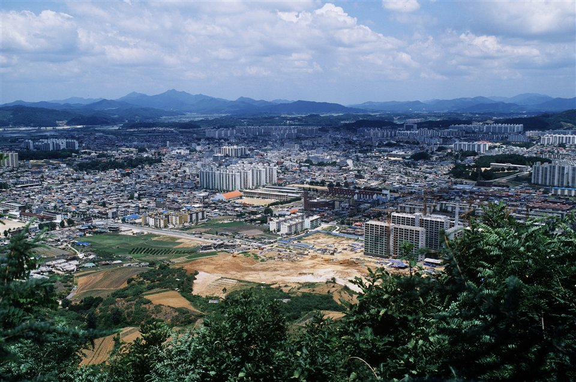

충주는 학원가가 한 곳에 몰려 있지 않은 도시입니다. 연수동과 칠금동 쪽에 학원이 모여 있고, 호암동·목행동·주덕 쪽은 거기까지 오가는 데만 저녁 시간이 꽤 듭니다. 국원고(국원고등학교)·충주고(충주고등학교)·충주여고(충주여자고등학교)·충원고(충원고등학교) 같은 고등학교와 칠금중(칠금중학교)·충주중(충주중학교)·탄금중(탄금중학교)이 시내 여기저기에 흩어져 있어, 같은 충주라도 집에서 학원까지 걸리는 시간이 제각각입니다. 이동에서 빠지는 시간이 아까울 때 1:1 중등 국어과외나 고등 수학과외를 찾게 됩니다.
오늘은 충주로 직접 찾아가는 선생님들 가운데 맡는 과목이 서로 다른 두 분을 소개합니다. 한 분은 초등부터 고3까지 국어를 보는 선생님, 한 분은 초등부터 고3까지 수학을 보는 선생님입니다.
충주에서 중등 국어과외 문의가 들어오는 자리는 대개 중1 2학기와 고1 1학기입니다. 지문이 길어지고 선지가 비슷해지면서 "읽기는 읽었는데 답을 못 고른다"가 시작됩니다. 이 선생님을 소개하는 이유는 한 사람이 초등부터 고3까지 이어서 볼 수 있기 때문입니다. 학년이 바뀔 때마다 처음부터 다시 진단하지 않아도 됩니다.
외국인에게 한국어를 가르친 경력이 있어, "당연히 아는 것"으로 넘기지 않고 단어와 문장 구조를 끝까지 풀어 설명하는 편입니다. 국어에서 막히는 학생의 상당수는 개념어 자체를 흐릿하게 알고 있는 경우라, 이런 방식이 도움이 됩니다. 국어 외에 초등 저학년 영어와 수학도 함께 볼 수 있어, 과목을 나눠 여러 선생님을 부르기 어려운 집에 맞습니다. 평일 저녁 늦은 시간과 토요일 오전까지 수업이 가능합니다.
최ㅇ진 선생님 상세 프로필 →충주에서 고등 수학과외를 찾는 집의 고민은 대개 비슷합니다. 고등 과정에서 막혔는데 원인이 중학교 단원에 있는 경우입니다. 이 선생님을 소개하는 이유는 그 비어 있는 자리를 찾아 되돌아가는 수업을 하기 때문입니다. 진도를 서둘러 빼기보다, 학생이 잘못 알고 있는 지점을 먼저 확인하고 거기서부터 다시 쌓습니다.
초1부터 고3까지 수학을 맡고 국어도 중3까지 볼 수 있어, 두 과목을 한 사람에게 맡기고 싶은 경우에도 맞습니다. 검정고시를 준비하는 학생도 지도합니다. 수업 가능한 시간이 요일별로 정해져 있으니 상담 때 일정을 먼저 맞춰 보시는 편이 좋습니다. 방문 수업만 하는 선생님이라 충주 시내 안에서 진행합니다.
채ㅇ민 선생님 상세 프로필 →학교마다 진도와 시험 범위가 달라서, 학교별로 준비법을 따로 정리해 두었습니다.
관련 검색어: 충주국어과외 · 충주수학과외 · 충주고내신 · 충주여고내신 · 국원고수학과외
👉 충주 국어과외 선생님 · 충주 수학과외 선생님 · 충주 관리 학교 전체 보기